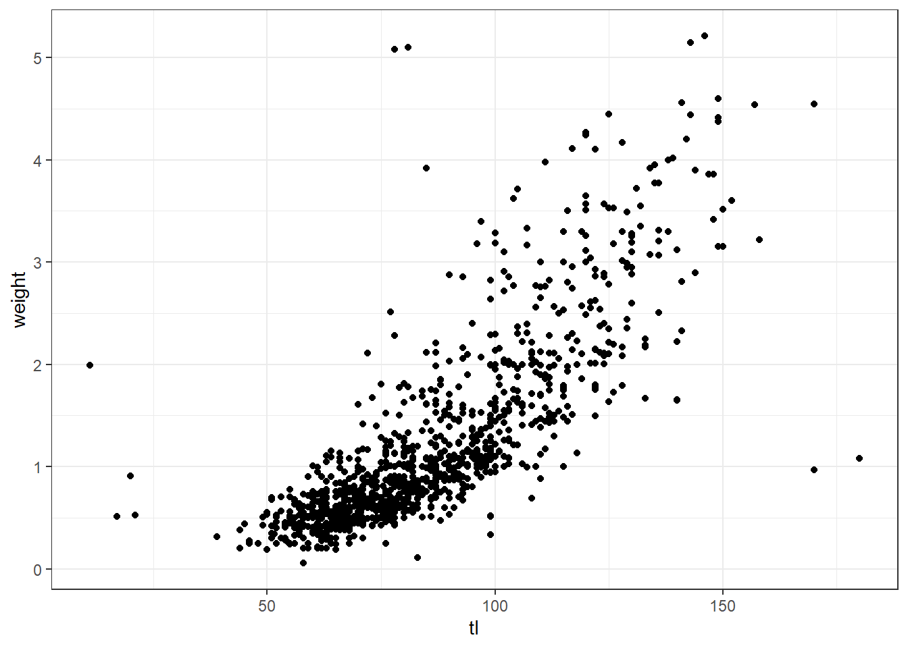
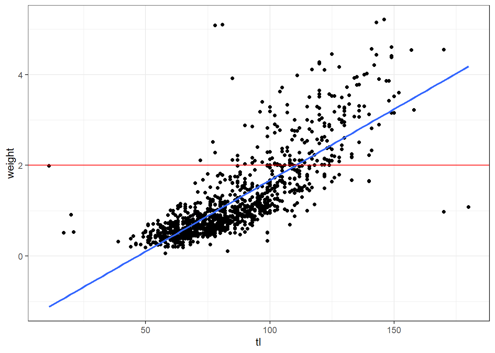
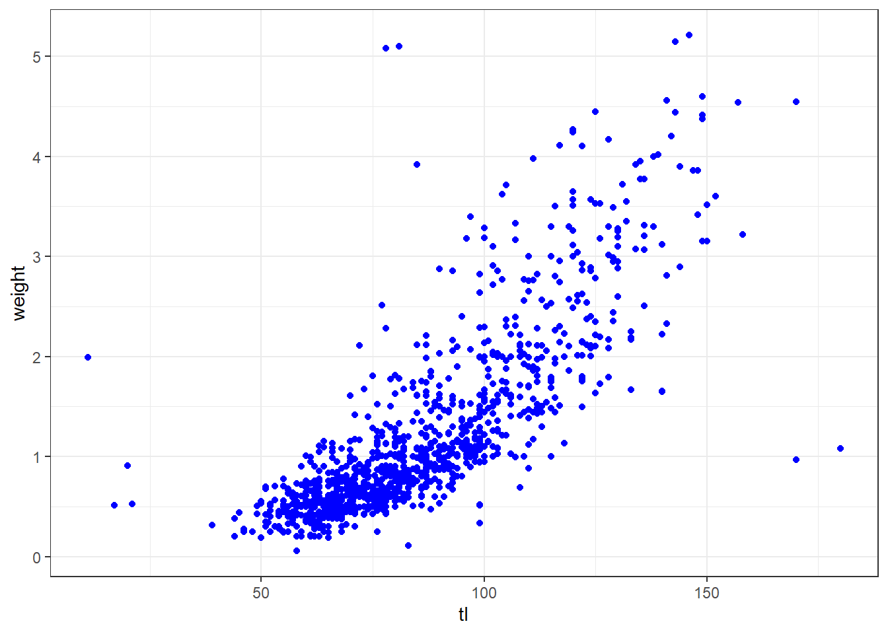
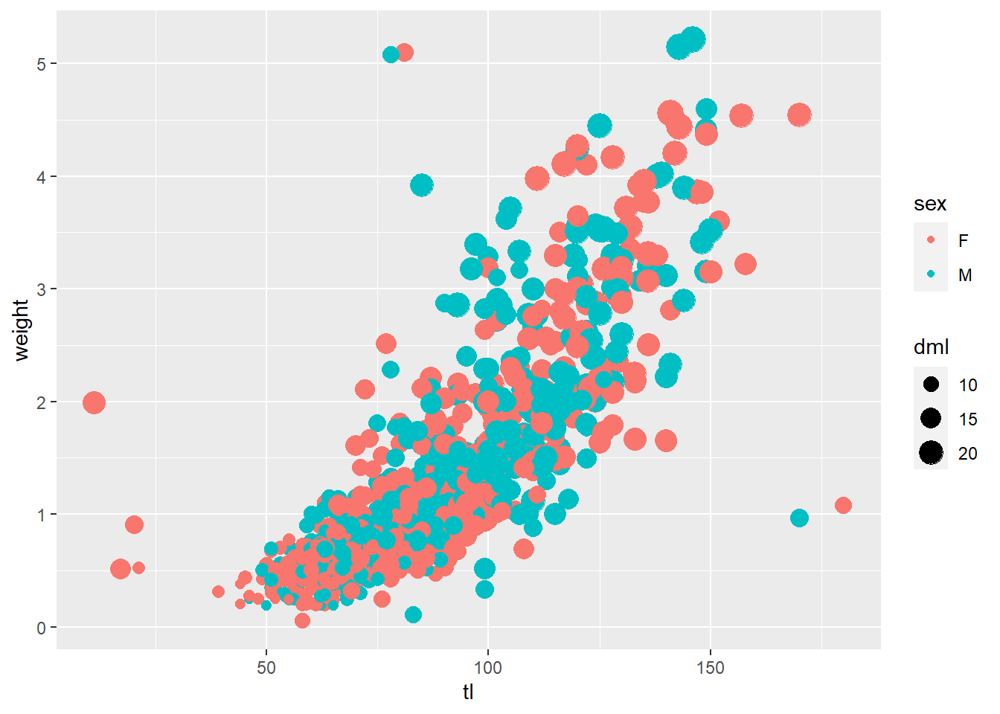
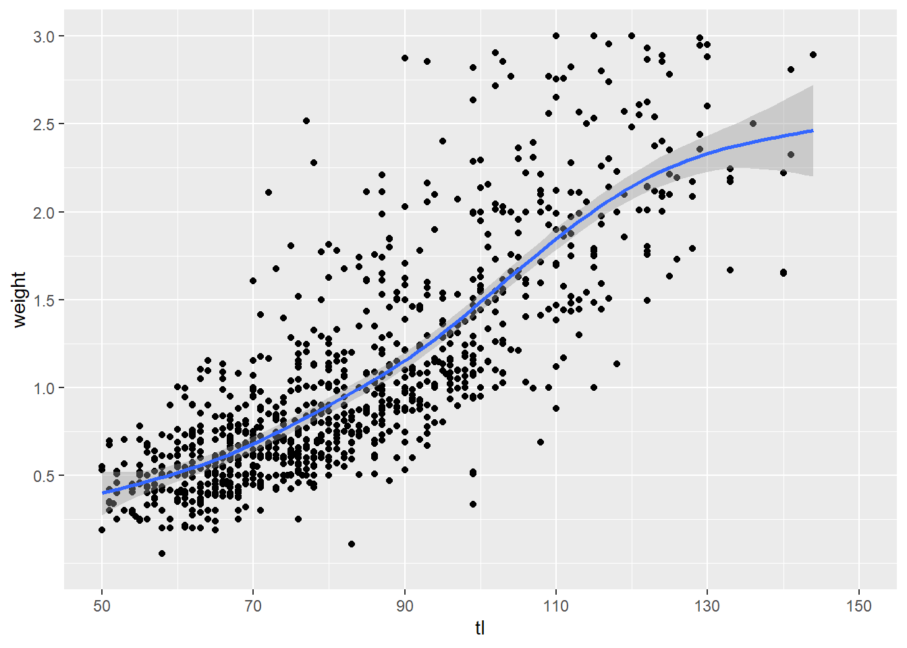
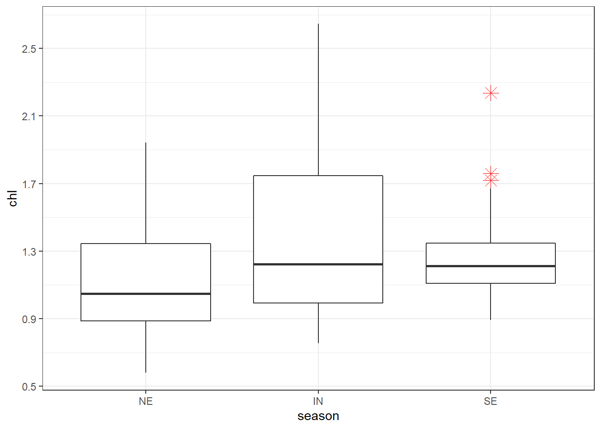
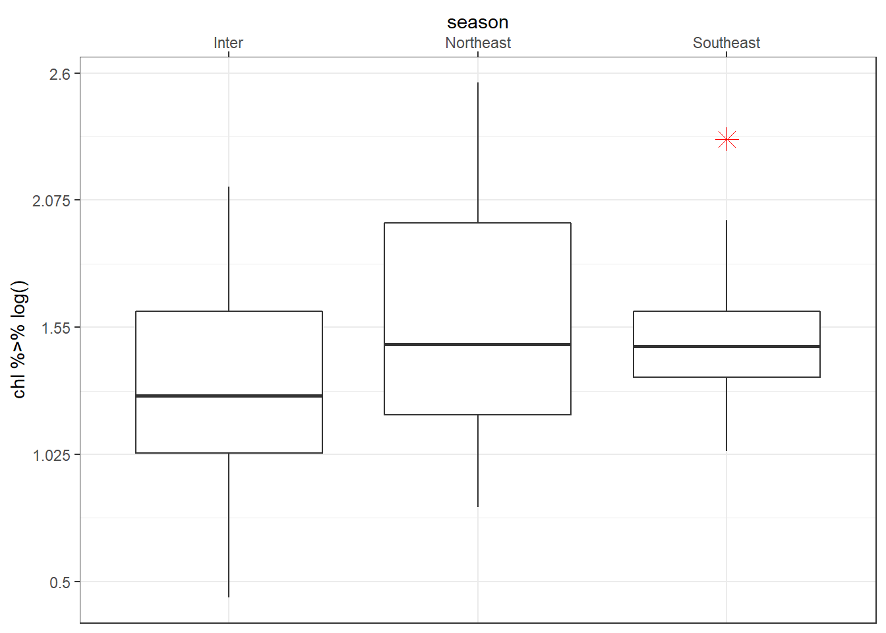
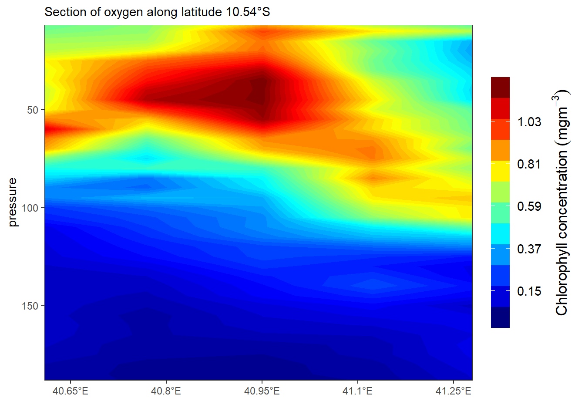
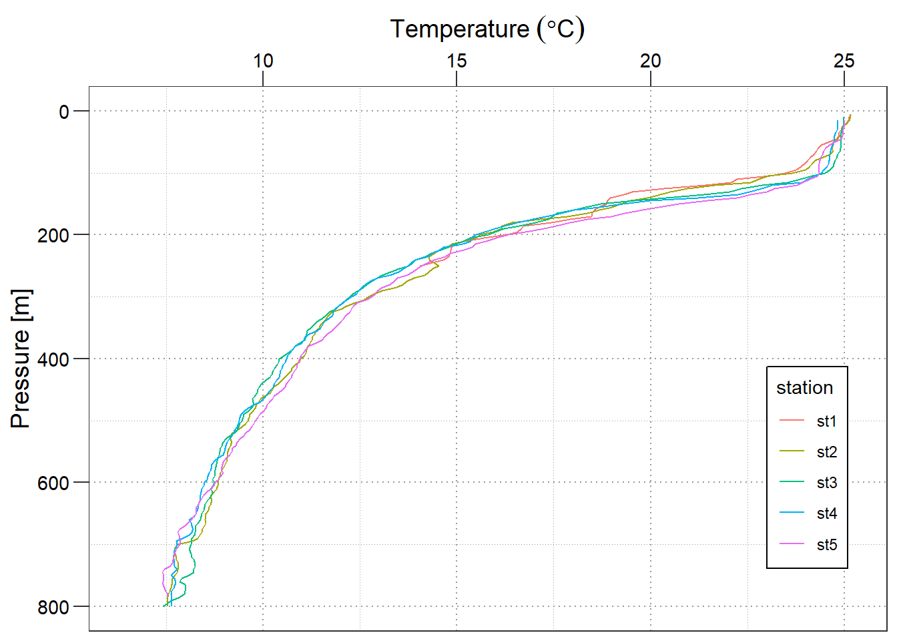

Chapter 8 A grammar for graphics
8.1 geoms
In this section, we will create some of the most routinely used plots to explore data using the geom_ functions.
We will use the following libraries in this post:
- readr
- ggplot2
- tibble
- dplyr
Which are part of the tidyverse. By loading the tidyverse, we also load all the packages mentioned above
All the data sets used in this post can be found here and code can be downloaded from here.
The variables representing the X and Y axis can be specified either in ggplot() or in geom_point(). We will learn to modify the appearance of the points in a different post.
8.1.1 Regression Line
You can fit the regression on the scatterplot with geom_smooth()
lm = ggplot(data = octopus,
aes(x = tl, y = weight)) +
geom_point()+
geom_smooth(method = "lm", se = TRUE)+
labs(x = NULL, y = NULL, title = "linear model")
gam = ggplot(data = octopus,
aes(x = tl, y = weight)) +
geom_point()+
geom_smooth(method = "gam", se = TRUE)+
labs(x = NULL, y = NULL, title = "GAM")
loess = ggplot(data = octopus,
aes(x = tl, y = weight)) +
geom_point()+
geom_smooth(method = "loess", se = FALSE)+
labs(x = NULL, y = NULL, title = "LOESS")
egg::ggarrange(lm,gam, loess, nrow = 1)
8.1.2 Horizontal/ vertical lines
A segment of horizontal or vertical line can be added on the plot using egg::ggarrange
8.2 aes()
In this section, we focus on the aesthetics i.e. color, shape, size, alpha, line type, line width etc. We can map these to variables or specify values for them. If we want to map the above to variables, we have to specify them within the aes() function. We will look at both methods in the following sections.
Explore aesthetics such as
- color
- shape
- size
- fill
- alpha
- width
8.2.1 Color
In ggplot2, when we mention color or colour, it usually refers to the color of the geoms. The fill argument is used to specify the color of the shapes in certain cases. In this section, we will see how we can specify the color for the different geoms we learnt in the previous post.
For points, the color argument specifies the color of the point for certain shapes and border for others. The fill argument is used to specify the background for some shapes and will not work with other shapes. Let us look at an example:

If you do not want to map a variable to color, you can specify it separately using the color argument but in this case it should be outside the aes() function.
8.2.2 shape

Let us map size of points to a variable. It is advised to map size only to continuous variables and not categorical variables.
8.3 Axis and labels
In this section, we learn about about aesthetic and focus on
- add title and subtitle to the plot
- modify axis labels
- modify axis range
- remove axis format axis
Let us start with a simple scatter plot. We will continue to use the octopus data set and examine the relationship between total length and body weight using geom_point().
oct = ggplot(data = octopus,
aes(x = tl, y = weight)) +
geom_point()+
geom_smooth(method = "gam", se = TRUE)We add the axis labels, title and subtitle for the plot using the labs()
ggplot(data = octopus,
aes(x = tl, y = weight)) +
geom_point()+
geom_smooth(method = "gam", se = TRUE) +
labs(x = "Total length (cm)", y = "Weight (g)",
title = "Octopus", subtitle = "The total length and body weight of octopus")
## Axis Range
Often times, you may want to modify the range of the axis value. In ggplot2, we can achieve this using scale_function
ggplot(data = octopus,
aes(x = tl, y = weight)) +
geom_point()+
geom_smooth(method = "gam", se = TRUE) +
labs(x = "Total length (cm)", y = "Weight (g)",
title = "Octopus", subtitle = "The total length and body weight of octopus")+
scale_x_continuous(breaks = seq(30,180,30))+
scale_y_continuous(breaks = seq(0,5,1))
Sometimes the axis label become a reduntat
8.4 Text annotaion
Annotation help to add custom text to the plot.
8.5 Scales
Whenever you specify an aesthetic mapping, ggplot2 uses a particular scale to determine the range of values that the data encoding should be mapped to. However, there times you need to customize the scale. ggplot2 has scales_*() function that allows to modify titles, labels, limits, breaks and position of the axis.
Each scale can be represented by a function named in the following format: scale_, followed by the name of the aesthetic property (e.g., x or color), followed by an _ and the type of the scale (e.g., continuous or discrete). A continuous scale will handle values such as numeric data (where there is a continuous set of numbers), whereas a discrete scale will handle values such as colors (since there is a small discrete list of distinct colors). In simple language, the x and y-axis of a continuous data is modified with the scale_x_continuous() and scale_y_continuous() functions.
ggplot(data = octopus,
aes(x = tl, y = weight)) +
geom_point()+
geom_smooth(method = "gam", se = TRUE)+
scale_x_continuous(limits = c(50, 150), breaks = seq(50,150,20))+
scale_y_continuous(limits = c(0,3), breaks = seq(.5, 3, .5))The x and y-axis of a continuous data is modified with the scale_x_discrete() and scale_y_continuous() functions.
ggplot(data = mafia.chl.season , aes(x = season, y = chl))+
geom_boxplot( outlier.colour = "red", outlier.shape = 8, outlier.size = 4)+
scale_x_discrete(limits = c("NE", "IN", "SE"))+
scale_y_continuous(breaks = seq(0.5,2.5,.4))
when the data has been transformed, for instance because of the low value, chlorophyll-a are often stretched with the log-tranformation for visual appeal. But the log-transformed values make no sense about concentration and hence the real values must replace them. We can change the tick labels using the labels argument. When adding labels, tick breaks and labels must have the same length.
ggplot(data = mafia.chl.season , aes(x = season, y = chl %>% log()))+
geom_boxplot( outlier.colour = "red", outlier.shape = 8, outlier.size = 4)+
scale_x_discrete(limits = c("NE", "IN", "SE"),
labels = c("Inter", "Northeast", "Southeast"))+
scale_y_continuous(breaks = seq(-0.5,1,length.out = 5),
labels = seq(0.5,2.6,length.out = 5))
The position of the axes can be changed using the position argument. For instance, to move the the x-axis to the top of the plot you only need to specify position = top as written in code below;
ggplot(data = mafia.chl.season , aes(x = season, y = chl %>% log()))+
geom_boxplot( outlier.colour = "red", outlier.shape = 8, outlier.size = 4)+
scale_x_discrete(position = "top",
limits = c("NE", "IN", "SE"),
labels = c("Inter", "Northeast", "Southeast"))+
scale_y_continuous(breaks = seq(-0.5,1,length.out = 5),
labels = seq(0.5,2.6,length.out = 5))Fill the boxplot with season to specify the colors and arrange the colors manual with scale_fill_manual() function as written below.
ggplot(data = mafia.chl.season , aes(x = season, y = chl %>% log(), fill = season))+
geom_boxplot( outlier.colour = "red", outlier.shape = 8, outlier.size = 4)+
scale_x_discrete(position = "top",
limits = c("NE", "IN", "SE"),
labels = c("Inter", "Northeast", "Southeast"))+
scale_y_continuous(breaks = seq(-0.5,1,length.out = 5),
labels = seq(0.5,2.6,length.out = 5))
Note the order of layers matter here: you scale_fill_manual() function must start before scale_x_discrete() function. Otherwise the colours you specify mismatch with legend colors as shown
ggplot(data = mafia.chl.season , aes(x = season, y = chl %>% log(), fill = season))+
geom_boxplot( outlier.colour = "red", outlier.shape = 8, outlier.size = 4)+
scale_x_discrete(position = "top",
limits = c("NE", "IN", "SE"),
labels = c("Inter", "Northeast", "Southeast"))+
scale_fill_manual(values = c("red", "blue", "green"))+
scale_y_continuous(breaks = seq(-0.5,1,length.out = 5),
labels = seq(0.5,2.6,length.out = 5))The scale_*_reverse() allows to reverse the order of the axis. For instance, when plotting profiles, we reverse y-xis and position the label of x-axis at the top
8.6 Guides
guides() helps to set, modify and remove legend for a specific aesthetic. It has two functions—guide_legend() or guide_colorbar(). Let make a section plot of the fluorescence with the default options for the legend
section =ggplot(data = algoa %>% filter(lat < -10),
aes(x = lon, y = pressure, z = fluorescence)) +
metR::geom_contour_fill(na.fill = TRUE, bins = 60) +
metR::scale_x_longitude(ticks = .15) +
scale_y_reverse(limits = c(200,0))+
scale_fill_gradientn(colours = oce::oce.colors9A(120),
breaks = seq(0.15,1.25, length.out = 6) %>%round(2))+
labs(subtitle = paste("Section of oxygen along latitude", metR::LatLabel(-10.54)))+
coord_cartesian(expand = TRUE, ylim = c(180,15))
sectionWe can add the contour labels and remove the legend in a graph
The guide_colorbar() modify the look and appearance of the legend to smooth colorbar. for instane the code of lines below highlight the key arguments that one has to specify to modify the legend of colorbar.
section +
guides(fill = guide_colorbar(title = expression(Chlorophyll~concentration~(mgm^{-3})),
title.position = "right",
title.theme = element_text(angle = 90, size = 13),
title.hjust = .5,
label.theme = element_text(angle = 0, size = 11),
label.position = "right",
raster = FALSE,
nbin = 12,
reverse = FALSE,
barwidth = 1.1,
barheight = 15))If you want the legend to appear as individual key, use guide_colorbar() as written in the code below
section +
theme(legend.position = "bottom") +
guides(fill = guide_legend(title = expression(Chlorophyll~concentration~(mgm^{-3})),
title.position = "top",
title.theme = element_text(angle = 0, size = 13),
title.hjust = .5,nrow = 1,
reverse = FALSE,
keywidth = 3., keyheight = .8,
direction = "horizontal",
label.theme = element_text(angle = 0, size = 11),
label.position = "bottom"))
8.7 Themes
Themes in ggplot modify the appearance of all non data compoments in the plot like: axis, legend, panel, plot area, background, margin, facets etc. Let’s create a profile plot of temperature with default theme settings
profile = ggplot(data = algoa %>% filter(lat < -10),
aes(x = temperature, y = pressure, color = station))+
geom_path() +
scale_y_reverse(limits = c(800,0))+
scale_x_continuous(position = "top") +
labs(y = "Pressure [m]",x = expression(Temperature~(degree*C)))
profile
We can modify the size and color of axis label with the axis.text() and axis title with axis.title() functions. You can use axis.title.y to modify the Y axis title and to modify the title of both the axis together, use axis.title.
profile +
theme(axis.text = element_text(size = 11, colour = "black"),
axis.title = element_text(size = 14, colour = "black"))
To modify the appearance of the axis ticks, use the axis.ticks_* argument. You can change the color, size, linetype and length of the ticks using the element_line() function as shown below.
profile +
theme(axis.text = element_text(size = 11, colour = "black"),
axis.title = element_text(size = 14, colour = "black"),
axis.ticks.length = unit(.3, "cm"))
The panel_grid argument is used to modify the appearance of the gridlines. You can change the color, size and linetype of the line using the element_line() function.
profile +
theme(axis.text = element_text(size = 11, colour = "black"),
axis.title = element_text(size = 14, colour = "black"),
axis.ticks.length = unit(.3, "cm"),
panel.grid = element_line(colour = "grey60", linetype = 3))The background of the legend can be modified using the legend.background argument. You can change the background color, the border color and line type using element_rect().
profile +
theme(axis.text = element_text(size = 11, colour = "black"),
axis.title = element_text(size = 14, colour = "black"),
axis.ticks.length = unit(.3, "cm"),
panel.grid = element_line(colour = "grey60", linetype = 3),
panel.background = element_rect(fill = "white", colour = "black"))
Now, let us look at modifying the non-data components of a legend.
profile +
theme(axis.text = element_text(size = 11, colour = "black"),
axis.title = element_text(size = 14, colour = "black"),
axis.ticks.length = unit(.3, "cm"),
panel.grid = element_line(colour = "grey60", linetype = 3),
panel.background = element_rect(fill = "white", colour = "black"),
legend.key = element_blank(),
legend.position = c(.9,.3),
legend.background = element_rect(colour = "black", fill = "white"))The appearance of the text can be modified using the legend.text argument. You can change the color, size and font using the element_text() function. The position and direction of the legend can be changed using legend.position() function.
profile +
scale_color_discrete(name = "Stations")+
theme(axis.text = element_text(size = 11, colour = "black"),
axis.title = element_text(size = 14, colour = "black"),
axis.ticks.length = unit(.3, "cm"),
panel.grid = element_line(colour = "grey60", linetype = 3),
panel.background = element_rect(fill = "white", colour = "black"),
legend.key = element_blank(),
legend.position = c(.9,.3),
legend.background = element_rect(colour = "black", fill = "white"),
legend.text = element_text(size = 11, colour = "black"),
legend.title = element_text(size = 13, colour = "black"))